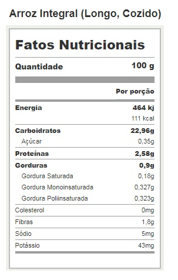

|
Um dos pricipais atrativos do nosso aplicativo seria a Tabela Nutricional dos alimentos que você registra! Abaixo, possuímos uma tabela nutriocional do arroz! O nosso aplicativo isrá prover todas as informações necessárias para assim ser possível contronlar melhor suas dietas, tendo assim, uma melhor alimentação. |
|
|  | |